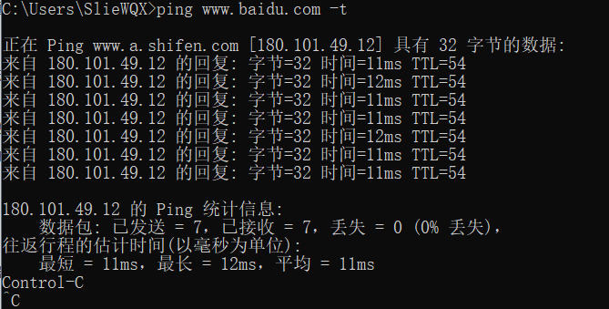
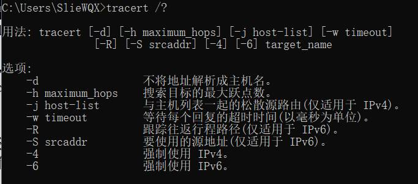
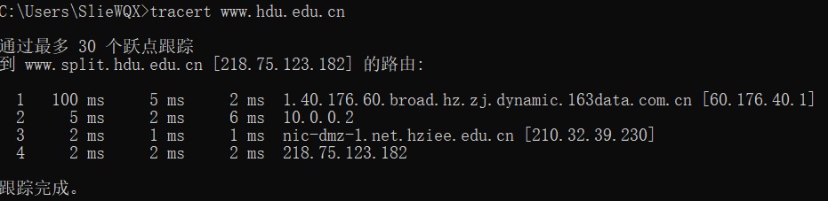

常见网络命令|计网基础Ⅰ
基本命令预览
| 序号 | 命令 | 说明 | 示例 |
|---|---|---|---|
| 1 | ping | 最基本最常用的网络探测命令 | ping 192.168.0.1 -t |
| 2 | ipconfig | 查看本机的网络配置信息（windows系统） | ipconfig /all (显示所有配置信息) |
| 3 | ifconfig | 显示或配置网络设备（Linux系统） | ifconfig eth0 192.168.0.1 netmask 255.255.255.0 |
| 4 | netstat | 该命令使用 NBT（TCP/IP 上的 NetBIOS） 显示协议统计和当前 TCP/IP 连接。 | netstat –a –b |
| 5 | arp | 该命令显示和修改**“地址解析协议”(ARP)** 所使用的到以太网的 IP 或令牌环物理地址映射表 | arp -a arp -s 192.168.0.1 00-50-ff-6c-08-75 |
| 6 | tracert | 路由跟踪命令 | tracert www.sina.com.cn |
| 7 | net | 多功能命令（windows） | net view; net user; net use; net start; net stop; net share; net … |
PING命令
介绍
Ping是潜水艇人员的专用术语，表示回应的声纳脉冲，在网络中Ping是一个十分好用的TCP/IP工具。它主要的功能是用来检测网络的连通情况和分析网络速度，测试与目标主机的连通性。
进行的操作：
通过将ICMP(Internet控制消息协议)回显数据包发送到计算机并侦听回显回复数据包来验证与一台或多台远程计算机的连接
每个发送的数据包最多等待一秒
打印已传输和接收的数据包数
使用
在操作系统的命令行窗口（CMD）中，通过ping命令使用即可。
可选配置：
-tPing 到指定的主机，直到停止
- 若要查看统计信息并继续操作，请键入 Ctrl+Break；
- 若要停止，请键入 Ctrl+C
-a
将地址解析为主机名
-n count要发送的回显请求数
-l size发送缓冲区大小
-f在数据包中设置“不分段”标记 (仅适用于 IPv4)
-i TTL
生存时间。
-v TOS服务类型
(仅适用于 IPv4。该设置已被弃用，对 IP 标头中的服务类型字段没有任何影响)
-r count记录计数跃点的路由 (仅适用于 IPv4)
-s count计数跃点的时间戳(仅适用于 IPv4)
-j host-list与主机列表一起使用的松散源路由(仅适用于 IPv4)
-k host-list与主机列表一起使用的严格源路由(仅适用于 IPv4)
-w timeout等待每次回复的超时时间(毫秒)
-R同样使用路由标头测试反向路由(仅适用于 IPv6)。
根据 RFC 5095，已弃用此路由标头。如果使用此标头，某些系统可能丢弃回显请求。
-S srcaddr要使用的源地址
-c compartment路由隔离舱标识符
-pPing Hyper-V 网络虚拟化提供程序地址
-4强制使用 IPv4
-6强制使用 IPv6
使用举例：
1 | ping www.baidu.com -t |
示例截图：

结果分析：
上述结果表明，本系统以32byte大小的数据包对百度进行ping，时间最短为11ms，TTL为54.
其中，TTL是 Time To Live的缩写，译为生存时间值，可通过该指间接得到访问百度所要跳的路由器数量
应用
暂时搁浅
ipconfig命令
介绍
ifconfig命令其实与ipconfig命令一样，但是ifconfig主要是在Linux系统下作用
Windows中的ipconfig实用程序（在Windows 95/98中为图形用户界面的的winipcfg）可用于显示当前的TCP/IP配置的设置值。
这些信息一般用来检验人工配置的TCP/IP设置是否正确
使用
| 选项 | 含义 |
|---|---|
/? | 显示此帮助消息 |
/all | 显示完整配置信息 |
/release | 释放指定适配器的 IPv4 地址 |
/release6 | 释放指定适配器的 IPv6 地址 |
/renew | 更新指定适配器的 IPv4 地址 |
/renew6 | 更新指定适配器的 IPv6 地址 |
/flushdns | 清除 DNS 解析程序缓存 |
/registerdns | 刷新所有 DHCP 租用并重新注册 DNS 名称 |
/displaydns | 显示 DNS 解析程序缓存的内容 |
/showclassid | 显示适配器允许的所有 DHCP 类 ID |
/setclassid | 修改 DHCP 类 ID |
/showclassid6 | 显示适配器允许的所有 IPv6 DHCP 类 ID |
/setclassid6 | 修改 IPv6 DHCP 类 ID |
| 默认情况下，仅显示绑定到 TCP/IP 的每个适配器的 IP 地址、子网掩码和默认网关 |
对于 Release 和 Renew，如果未指定适配器名称，则会释放或更新所有绑定到 TCP/IP 的适配器的 IP 地址租用
对于 Setclassid 和 Setclassid6，如果未指定 ClassId，则会删除 ClassId
使用举例：
1 | ipconfig /all |
应用
暂时搁浅
tracert命令
介绍
tracert为trace route的缩写可以按顺序打印出返回“ICMP 已超时”消息的路径中的近端路由器接口列表
大致原理：
通过向目标发送不同IP生存时间 (TTL) 值的“Internet控制消息协议 (ICMP)”回应数据包，Tracert诊断程序确定到目标所采取的路由。
要求路径上的每个路由器在转发数据包之前至少将数据包上的 TTL 递减 1。
数据包上的 TTL 减为 0 时，路由器应该将“ICMP 已超时”的消息发回源系统。
Tracert 先发送 TTL 为 1 的回应数据包，并在随后的每次发送过程将TTL递增 1，直到目标响应或 TTL 达到最大值，从而确定路由。
通过检查中间路由器发回的“ICMP 已超时”的消息确定路由。
某些路由器不经询问直接丢弃 TTL 过期的数据包，这在 Tracert 实用程序中看不到。
来自 百度百科：跟踪路由
使用
Tracert命令的使用方法如下图所示

举例：

ARP命令
介绍
ARP命令用于显示和修改“地址解析协议”缓存中的项目
使用
常见用法
arp -a或arp –g
用于查看高速缓存中的所有项目
-a和-g参数的结果是一样的，多年来-g一直是UNIX平台上用来显示ARp高速缓存中所有项目的选项，而Windows用的是arp -a（-a可被视为all，即全部的意思），但它也可以接受比较传统的-g选项。arp -a Ip
如果有多个网卡，那么使用arp -a加上接口的Ip地址，就可以只显示与该接口相关的ARp缓存项目。arp -s Ip物理地址
可以向ARp高速缓存中人工输入一个静态项目 该项目在计算机引导过程中将保持有效状态，或者在出现错误时，人工配置的物理地址将自动更新该项目
arp -d Ip
使用该命令能够人工删除一个静态项目更多用法可通过
arp /?查询